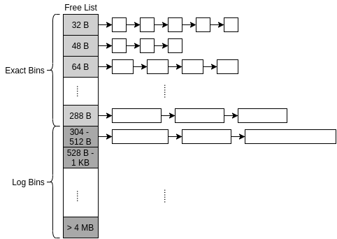
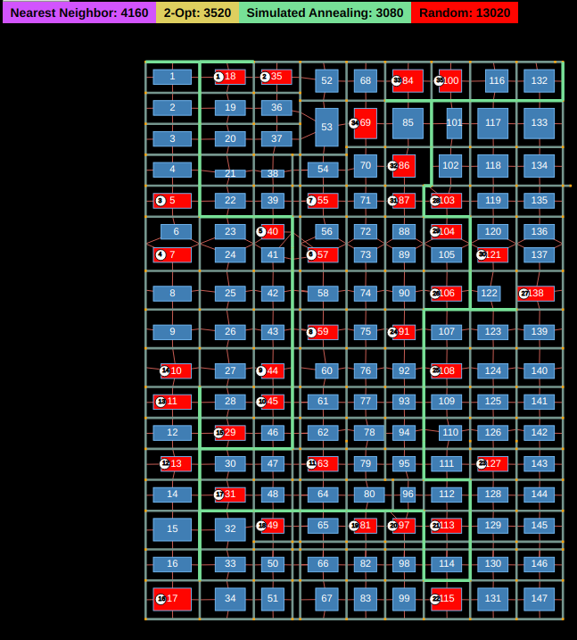
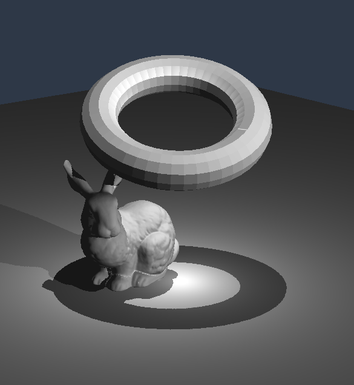
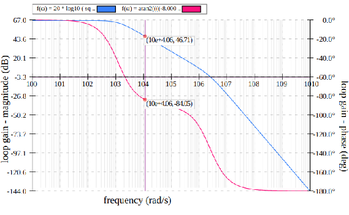
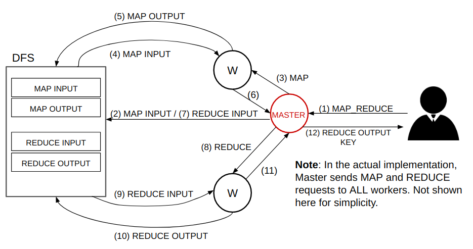
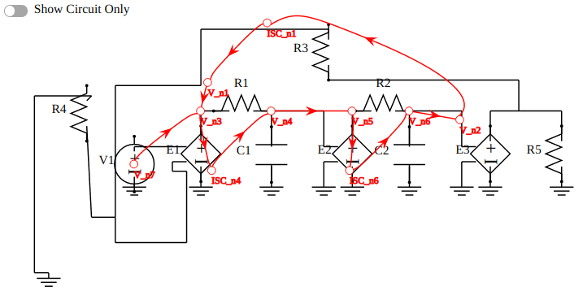
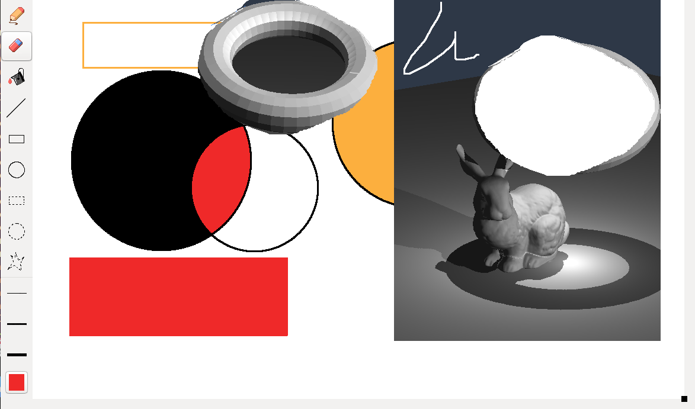

|
"jlmalloc" - Memory Allocator in C

|
Repository:
https://github.com/jimmy1231/jlmalloc
Languages/Technologies: ANSI C Lines of Code: ~1,500 Status: Completed Timeline: November, 2019
Description:
Inspired by dlmalloc, the standard dynamic memory allocator used in the standard GNU library. dlmalloc is a very good example of how a simplistic idea can be generalized to many applications. The main idea of dlmalloc is the Segregated Free List, which is used to achieve high performance - amortized O(1) allocation and free - while maintaining low fragmentation and high peak memory utilization. This allocator is optimized for specific workloads using various techniques such as:
|
|
"routes" - General Layout Designer & Path Optimizer

|
Repository:
https://github.com/sw-collabs/routes
Languages/Technologies: JavaScript (ES6), HTML 5, Scalar Vector Graphics (SVG) Lines of Code: ~4,000 Status: Completed Timeline: May, 2020
Description:
Designed to aide users to find their way around facitilies with complex layouts - e.g. Costco, Walmart, malls. Using their browsers, users are able to construct a 2D layout which matches that of the concerning facility. Users are able to place rectangles, which represent stores/locations, and also paths to indicate path/walkways which connect the stores/locations. While the layout design scheme seems very simplistic, most interior layouts can be represented simply with rectangles. After the layout has been inputted, the user then inputs a list of destinations which he/she would like to visit within this facility, and, with the layout provided, the application will do its best to compute the shortest possible distance which visits all destinations.
Shortest Path & Traveling Salesman Problem (TSP)
To benchmark performance of 2-opt and SA implementations, an approximated Held-Karp algorithm (which yields a lower-bound distance on the optimal TSP solution) was implemented. The algorithm was implemented using the top-down dynamic programming approach.
|
|
"render" - C++ OpenGL Static Model Rendering Engine

|
Repository:
https://github.com/jimmy1231/opengl-render
Languages/Technologies: C++, OpenGL, GLAD, GLM Lines of Code: ~2,000 Status: Ongoing Timeline: April, 2020 - Present
Description:
This is my first attempt at using OpenGL to render 3D graphics. OpenGL is a difficult library to learn from the onset, and this was a consistent challenge. Here is a list of features currently present:
As this project is ongoing, I hope to expand to include:
|
|
"svgraph" - Browser-Based Discrete Mathematical Graphing Tool

|
Repository:
https://github.com/jimmy1231/svgraph
Languages/Technologies: JavaScript, Scalar Vector Graphics (SVG) Lines of Code: ~1,500 Status: Completed Timeline: October, 2019 - April, 2020
Description:
Implemented from scratch with Scalar Vector Graphics:
|
| "MapReduce" - MapReduce with Key-Value Data Storage  |
Repository:
https://github.com/jimmy1231/distributed-kv
Languages/Technologies: Java 8, Bash, Apache ZooKeeper, Linux Lines of Code: ~6,000 Status: Completed Timeline: January, 2020 - April, 2020
Description:
MapReduce is a Single-Instruction-Multiple-Data (SIMD) distributed processing framework developed by Google. Its advantages are providing a framework which leverages Google's massive compute infrastructure to enable the processing of massive workloads (in the order of terabytes) across thousands of machines while guaranteeing reliability. This project is an imitation of MapReduce. It first implements a distributed Key-Value storage system, which is replicated at least 3 times, and available up to half of the total number of active nodes in the network. MapReduce, then, is placed atop this reliable, distributed Key-Value store (much like Google's MapReduce is placed atop the Google File System). Storage servers also serve as MapReduce workers. All communication occurs over reliable TCP channel. Please see the report for implementation details as well as performance testing results. |
|
"sfg-vis" - Signal Flow Graph Overlay & Visualizer

|
Repository:
https://github.com/jimmy1231/sfg-vis
Languages/Technologies: JavaScript, Scalar Vector Graphics (SVG) Lines of Code: ~1,200 Status: Completed Timeline: February, 2020 - April, 2020
Description:
The function of the Circuit Schematic Visualizer is to render each circuit component at predefined positions and orientations. Separate sub-modules were created for each unique component including: resistor, capacitor, dependent/independent voltage & current sources, wires, and ground nodes. The SFG Overlay solves the curve-generation problem by employing a heuristical variation of Bézier curves, a polynomial interpolation technique where a curve is procedurally generated based on a set of predefined control points. |
|
"paint" - Portable "MS Paint"-like Drawing Tool

|
Repository:
https://github.com/sw-collabs/paint
Languages/Technologies: C++, wxWidgets Lines of Code: ~3,000 Status: Completed Timeline: April, 2020
Description:
Closely resembling MS-Paint, but works for Mac and Linux.
Features include:
|
|
I’m Jimmy. I'm a software engineer currently based in Toronto, Canada. I graduated from the University of Toronto in 2020 with a Bachelor's of Applied Science, majoring in Computer Engineering, and have since been working as a Systems Software Developer for the start-up, FutureVault, a document management platform for corporations and institutions. My main role at FutureVault is as the primary operator and maintainer of a backend system, which I designed and implemented, that uses SFTP to integrate with 3rd party software to automate the delivery of millions of documents to client accounts. Starting as a Proof-of-Concept for one client 4 years ago to process a few dozen documents, it has since scaled to capture a wide range of use-cases, including: data migration, periodic financial/personal statement delivery, data backup and recovery, and more. To date, across more than a dozen institutional clients, 40% of all documents within FutureVault have been processed through the software I designed and implemented, which has proven to be one of the most successful and robust features in the product. Having worked with AWS for over 4 years, from serverless to Kubernetes, I am experienced in using cloud technologies to build scalable applications, and I am intimately familiar with the software development and release lifecycle of a cloud-based product, from design, to implementation, to deployment. As well, I pride myself on my strong communication skills, both verbally and in writing (e.g. documentation, emails). I would describe myself as logical, adaptable, attentive, caring, compassionate, and laid-back. I love sports and staying active! In my free time, I golf, swim, ski/snowboard, travel, and spend time with my family. This year, I'm hoping to participate in my first triathlon, start my own blog, and push myself to trying more things outside of my comfort zone. Thanks for taking the time to read through. Please feel free to reach out if you would like to connect or just want to talk about software! |